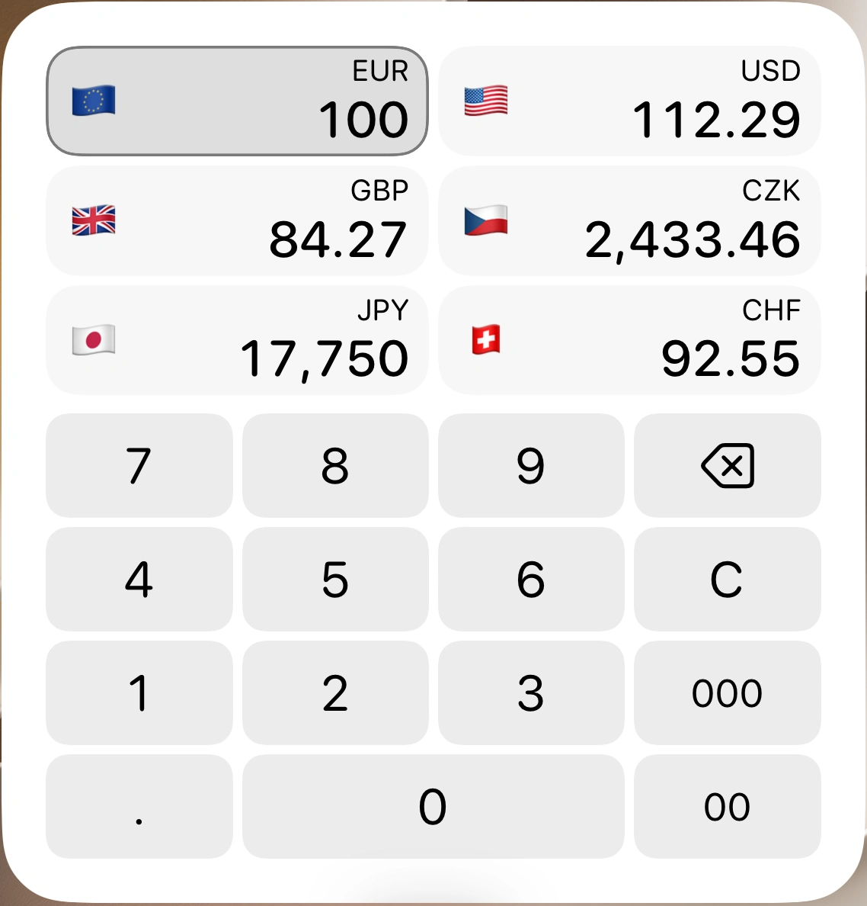
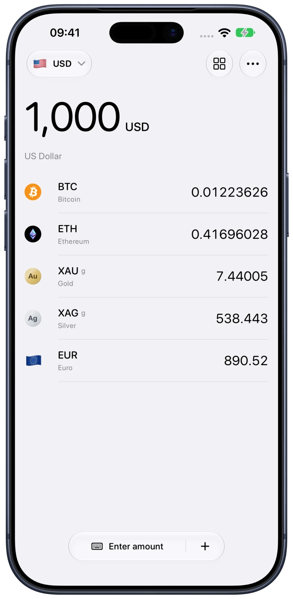
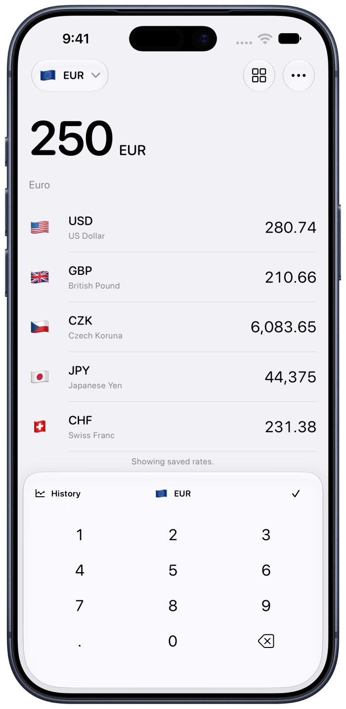
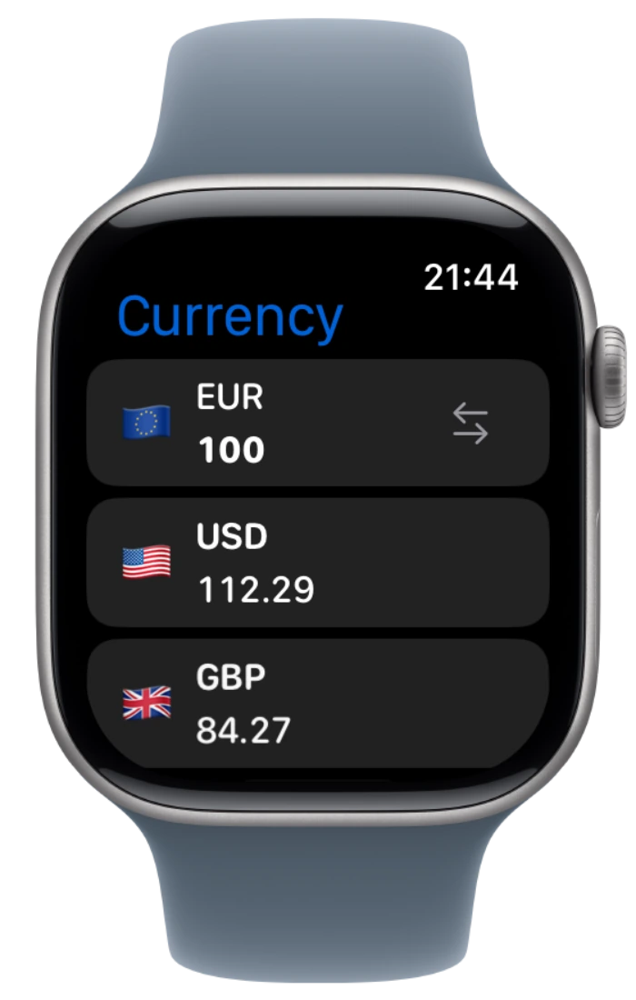
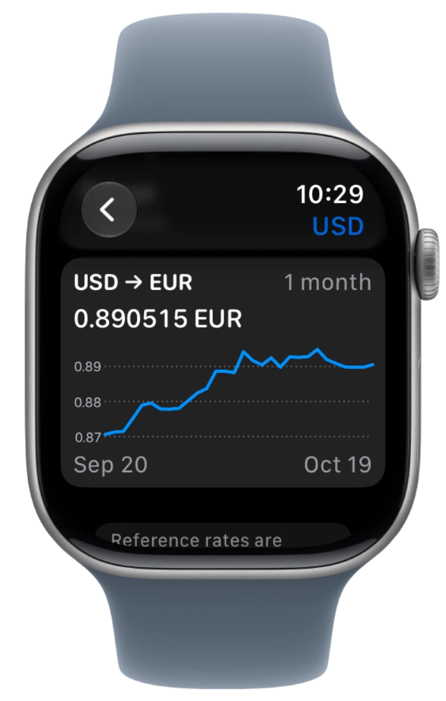
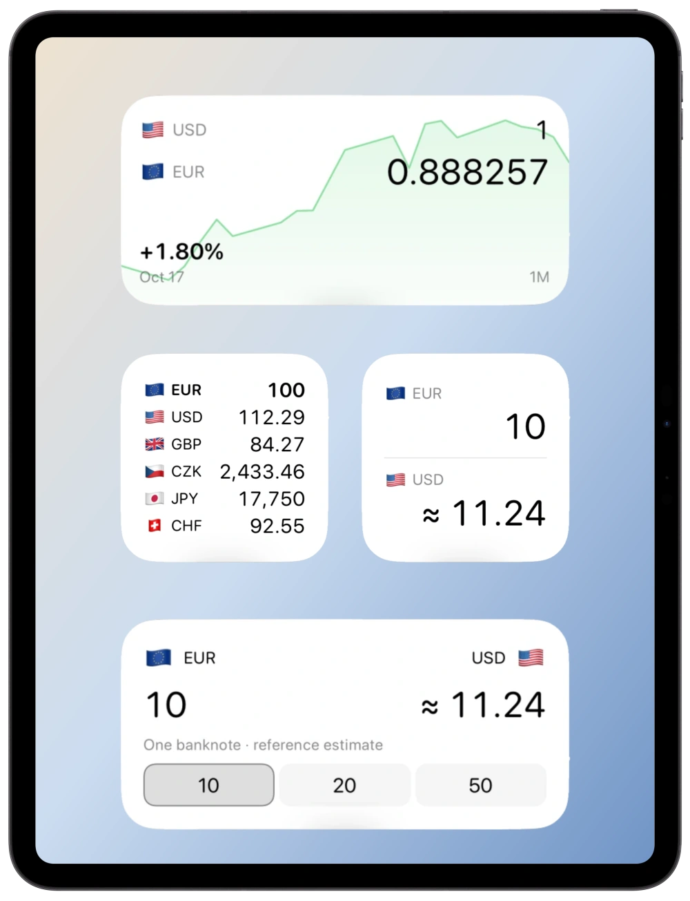
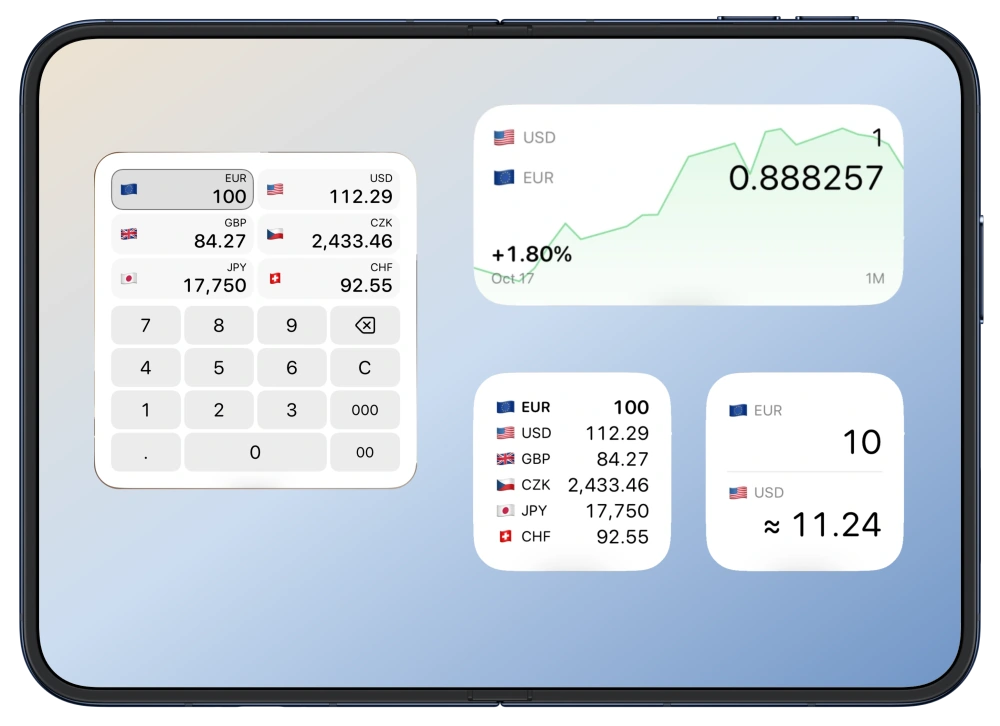

History
See how a rate has changed.
Free forever
Convert currencies on your Home Screen.
See your currencies change together.
iPhone · iPad · Apple Watch

160Currencies
Crypto& metals
OfflineConvert anywhere
Choose a currency, then type an amount.

See how a rate has changed.
Convert banknotes or metal weights.

Compare your currencies at a glance.
One currency pair at a glance.
Convert the currencies you use every day. Search, reorder your list and copy any amount.
Convert Bitcoin, Ethereum and more into your everyday currencies. Check available price history.
Convert gold and silver into your everyday currencies. Choose troy ounces, grams or kilograms.

Save rates online. Keep converting offline.

Convert, check history, and keep rates on your wrist. Even without your iPhone.




Swipe to see all Watch views


Convert currencies and check rates with Shortcuts.
Choose your currencies, app icon and colors.
No accounts, ads or analytics.
Yes. Currency and its widgets are free forever. No subscription or feature unlock is required.
Load rates online first. Offline conversions use rates already saved on your device. You can enter new amounts; refreshing rates needs internet.
No. Currency uses third-party reference rates and available rate history. Rates may be delayed or cached. Banks, exchanges and dealers may apply different rates, fees and spreads.
Add Currency from your device’s system widget gallery. Edit the widget to choose supported currencies and options. See the setup and support guide.